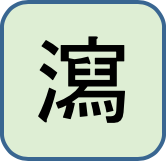
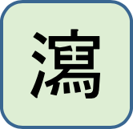

|
|
同 | 異 |
|
| 風濕 | 外感風寒、腰膝痛、下半身痛、神經痛 |
|
|
水腫、便秘、肥胖、關節炎 | |
|
|
全身痛證、關節疼痛 | |
|
|
各種痛證、四肢麻痺抽搐 | |
|
|
關節炎、神經痛、肺癆(肺結核)、發熱 | |
|
|
咽喉腫痛、吞嚥困難、腫瘡、乳房硬塊 | |
|
|
水腫、四肢抽搐 | |
|
|
胎動不安、腰膝酸痛 | |
|
|
風濕腰痛脊強、腎虛尿頻，遺尿，白帶過多 |
[top] ========================= 獨活 =========================
| 獨活 | |
| 性味 | 辛、苦，溫 |
| 歸經 | 腎膀胱 |
| 主治 | 祛風濕，止痹痛，解表 |
| 運用 | 1、風寒濕痹痛2、頭風頭痛，風寒表證及表證夾濕 |
| 藥性 |     |
● 羌活、獨活皆為去風濕藥，羌活作用在上半身(發散風寒)，獨活作用在下半身(腰膝) (故羌活又列為發散風寒藥) 傘形科植物: 防風+羌活+白芷+稿本+胡荽+柴胡+獨活+小茴香+阿魏+川芎+前胡+羊紅膻+當歸+北沙參+明黨參+蛇床子
【相關藥對】: ● 羌活+獨活 : 1.風痹為患，周身串痛、項背攣急、疼痛等症；2.外感風寒，以致發熱惡寒、項背拘急、疼痛，頭痛、關節疼痛者；3.歷節風（為痹證的一種，多由風寒癉邪侵襲經絡，流注關節所致，症見關節腫痛、遊走不定、痛勢劇烈、屈伸不利、晝輕夜重，邪鬱化熱，則見關節紅腫熱痛）。
[top] ========================= 防己 =========================
| 防己 | |
| 性味 | 苦、辛，寒 |
| 歸經 | 膀胱腎脾 |
| 主治 | 祛風濕，止痛，利水消腫 |
| 運用 | 1、用於風濕痹證2、用於水腫，小便不利，腳氣腫痛 |
| 藥性 |  |
● 馬兜鈴酸相關中藥:
- 含有馬兜鈴酸的中藥: 關木通、廣防己、青木香
- 不含有馬兜鈴酸的中藥: 川木通、粉防己、廣木香 (目前入藥者-->安全)
【相關藥對】: ● 防己+黃耆+蒼朮 : 治療氣虛水腫，全身水腫。 ● 防己+黃耆 : 治療氣虛水腫，全身水腫。 ● 蒼朮+防己 : 治療濕痺，四肢疼痛沈重。 ● 防己+薏苡仁+蒼朮+白朮 : 治療風濕痹證，全身沉重疼痛，水腫，小便不利，腳氣腫痛，舌苔白而厚膩。 ● 防己+木瓜 : 治療：1.風濕痹證，腳水腫，膝蓋變形，膝蓋腫痛。 ● 防風+防己 : 治療手腳抽筋。 ● 牡蠣+瓦楞子+防己+茯苓 : 淋巴癌。
[top] ========================= 烏頭 =========================
| 生川烏-生烏頭-烏頭 | |
| 性味 | 辛、苦，大熱；有大毒 |
| 歸經 | 心脾肝腎 |
| 主治 | 祛風除濕，散寒止痛 |
| 運用 | 1、用於風寒濕痹，拘急止痛2、用於寒濕諸痛 |
| 藥性 | |
● 《神農本草經》: 奚毒，附子也。一歲，為 子；二歲，為烏喙；三歲，為附子；四歲，為烏頭；五歲，為天雄。 ● 四肢關節寒濕重可使用烏頭。烏頭入肝，肝主筋; 附子入腎，腎陽不足腎虛寒時用附子 ● 中烏頭箭，內外用青黛解之，烏頭傷心，解之以遠志 ● 毒性: 烏頭 > 附子> 天雄 (草烏比川烏之毒性更強，多做外用) ● 烏頭類植物的有毒成份是烏頭堿，口服0.2mg即能使人中毒，口服3~5mg即可致死。但煎煮時間越長，毒性越低，經3~4小時烏頭堿基本被完全破壞
烏頭堿經煎煮後，水解成毒性較弱的笨醯烏頭原堿和乙酸-->笨醯烏頭原堿又可進一步分解為毒性極低微的烏頭原堿和苯甲酸
【相關藥對】:
[top] ========================= 威靈仙 =========================
| 威靈仙 | |
| 性味 | 辛、鹹，溫 |
| 歸經 | 膀胱 |
| 主治 | 祛風濕，通經絡，消痰水，治骨鯁 |
| 運用 | 1、用於風濕痹痛，拘攣麻木，癱瘓2、用於痰飲積聚3、用於諸骨鯁喉 |
| 藥性 | |
● 治痛風三藥: 蒼朮、黃柏、牛膝。欲破壞痛風石-->用威靈仙(內含秋水仙素) (威靈仙治痛風和諸骨哽) ● 威靈仙祛風除濕，通絡止痛，通行十二經脈，是為治骨刺名藥與專藥 ● 治風寒濕痺肢體拘攣或麻木之要藥：威靈仙 ● 諸骨鯁喉：威靈仙 毛茛科植物: 升麻+黃連+馬尾連+白頭翁+牡丹皮+赤芍+威靈仙+川烏+雪上一枝蒿+附子+貓爪草+白芍
【相關藥對】: ● 木瓜+雞血藤+威靈仙 : 治療骨質增生_骨疣_骨刺。 [top] ========================= 秦艽 =========================
| 秦艽 | |
| 性味 | 苦、辛，微寒 |
| 歸經 | 胃肝膽 |
| 主治 | 祛風濕，舒筋絡，退虛熱，清濕熱 |
| 運用 | 1、用於風濕痹痛，筋脈拘攣，手足不遂2、用於骨蒸潮熱，小兒疳熱3、用於濕熱黃疸 |
| 藥性 | |
● 抗痙攣藥:秦艽、鉤籐、殭蠶、蟬蛻 ● 可殺結核菌的相關中藥:
- 青蒿: 肝結核或肺結核
- 百部: 肺結核
- 秦艽: 肝、腎結核
| - | 溫熱藥 | 平藥 | 寒涼藥 |
| 補藥 | 白朮☀ | ||
| 平藥 | 玉米須 | 滑石☀ ,大青葉,秦艽,大薊,小薊,白茅根 | |
| 瀉藥 | 赤小豆☀ | 柴胡☀ ,淡竹葉☂ ,梔子☂ ,黃芩☀ ,黃柏☀ ,龍膽草☀ ,苦參☀ ,白鮮皮☀ ,蒲公英,大黃☀ ,茵陳蒿☀ ,金錢草☀ ,鬱金 |
| - | 升性藥 | 平藥 | 降性藥 |
| 散性藥 | 柴胡☀ | 金錢草☀ ,鬱金 | 淡竹葉☂ ,白鮮皮☀ ,蒲公英,滑石☀ ,茵陳蒿☀ ,赤小豆☀ |
| 平藥 | 苦參☀ | 大青葉,秦艽,玉米須,大薊,小薊,白茅根 | |
| 收性藥 | 白朮☀ | 梔子☂ ,黃芩☀ ,黃柏☀ ,龍膽草☀ ,大黃☀ |